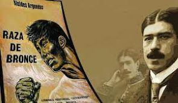

1Novela de la tierra
Romulo Gallegos : Fue un novelista y político venezolano connsiderado además como el novelista venezolano más relevante del siglo XX , Nació el 2 de agosto de 1884 en Caracas, Venezuela y su fallecimiento fue el 5 de abril de 1969 en Caracas , Venezuela. Nos presenta mediante la obra de doña barbara la cual nos presenta una venezuela cruel donde se ven distintos actos de corrupción,traición,despotismo,falta de libertad e injusticas pero a pesar de estos aspectos negativos tambien se busca demostrar que tambien existia una raza buen ala cual ama,sufre y esta lista para poder luchar contra la dictadura la cual se vivia en esos tiempos.
José Eustasio Rivera : Fue un escritor colombiano destacado por su obra poética pero pricipalmente por su novela La vorágine , Nació el 19 de febrero de 1888 en Rivera , Colombia y su fallecimiento fue el 1 de diciembre de 1928 en Nueva York , Estados Unidos. Obra la cual busca presentar una socdenunciaial de la violencia y el contexto el cual se vivió en la selva amazónica como consecuencia de la fiebre del caucho la cual sucedio entre finales de siglo XIX e inicios del siglo XX y nos llama a la reflexión filosófica y abordar la violencia como objeto de conocimiento
2Novela indigenista
Alcides Arguedas : Fue un escritor , político e historiador boliviano. Su obra literaria, que aborda temas relacionados con la identidad nacional, mestizaje y problemática indígena, tuvo una profunda influencia en el pensamiento social boliviano , Nació el 15 de julio de 1879 en La Paz , Bolivia y su fallecimiento tuvo lugar el 6 de mayo de 1946 en Chulumani , Bolivia. representa un mundo andino estructurado sobre la base de la negación del indio y de su problemática incorporación en los proyectos de configuración nacional, Si el criollo-mestizo se descubre como un ser intersubjetivo a través del deseo del indígena.

Jorge Icaza : Fue un novelista ecuatoriano ,en Colombia trabajó como escritor y director teatral , Nació el 10 de julio de 1906 en Quito , Ecuador y falleció el 26 de mayo de 1978 en Quito , Ecuador. Habla sobre el dueño de la hacienda de huasipungo a la cual no iba, pues prefería vivir en la ciudad con su esposa e hija y tener una vida hasta cierto punto cómoda. El padre busca entre las indias una nana para el bebé y elige a Cunshi, la mujer del protagonista, Andrés Chiliquinga. El indio, creyéndose abandonado por Cunshi, va a trabajar al monte y pierde una pierna en un accidente. En cambio, Chiliquinga ha sido encargado para ayudar en las obras junto con sus compañeros, lo que los obliga a soportar largas jornadas de trabajo y la actitud despótica del capataz, incluso hasta arriesgar sus vidas y perderlas.
3Novela de la revolución mexicana
Mariano Azuela : Fue un médico y escritor mexicano. Opositor al porfiriato, trabajó como médico en un campamento de Pancho Villa , Nació el 1 de enero de 1873 en Lagos de Moreno , México y falleció el 1 de marzo de 1952 en Ciudad de México , México. Esta es una novela del escritor mexicano que trata sobre la revolucion mexicana esta novela fue escrita en el Paso, Texas y habla sobre la vida cotidiana de estos , así como las batallas contra los federales y su alianza con el general Natera para la toma de Zacatecas.
Martín Luis Guzmán : Fue un escritor, periodista y diplomático mexicano a quien se le considera, junto a Mariano Azuela y a Nellie Campobello, pionero de la novela revolucionaria , Nació el 6 de octubre de 1887 en Chihuahua , México y falleció el 22 de diciembre de 1976 en Ciudad de México , México. La sombra del caudillo esta es una obra en la cual se hace una reflexión sobre el caudillismo posrevolucionario , se busca determinar que en dicha obra el antagonismo no se concentra únicamente en el personaje-tirano, sino que éste genera una atmósfera de fatalidad que se expande como la sombra, imagen poética que se ve reforzada con elementos textuales del mismo campo léxico. Lo que permite reconocer la configuración ambivalente del personaje-tirano que discurre sobre el problema del mal en la lucha por el poder, cuya presencia desata el conflicto en la trama, aunque curiosamente su ausencia lo vuelve omnipresente en las penumbras del sistema político mexicano. Además, el retrato del Caudillo en la novela de Guzmán está en diálogo con la facticidad histórica que posibilita la identificación de los personajes en el contexto de la Revolución Mexicana.
4Novela urbana
Macedonio Fernández : Fue un escritor, abogado y filósofo argentino. Célebre por su novela experimental Museo de la Novela de la Eterna, publicada póstumamente en 1967, Nació el 1 de junio de 1874 en Buenos Aires , Argentina y falleció el 10 de febrero de 1952 en Buenos Aires , Argentina. En la obra de papeles de recienvenido Macedonio Fernández ha sido casi un personaje de Borges. Su obra, poco leída, desaparece en los márgenes de la construcción de un mito que el mismo Borges, entre otros, rescata por su oralidad. Macedonio lo sabe y se ríe. En verdad, Macedonio Fernández es el punto extremo de la vanguardia argentina y su novela Museo de la Novela de la Eterna, indudablemente, revoluciona el género. Su literatura se define por la transgresión a cualquier tipo de reglas y busca experimentar la extraña metafísica de "el susto de la inexistencia".
Roberto Arlt : Fue un novelista, cuentista, dramaturgo, periodista e inventor argentino , Nació el 26 de abril de 1900 en Buenos Aires , Argentina y falleció el 26 de julio de 1942 en Buenos Aires , Argentina. Historia la cuál relata que Remo Erdosain , hombre que se encuentra atrapado en la desesperación ante su adversa falta de dinero y además se le acusa de estafar a la empresa donde trabaja. No sólo queda expuesto y humillado ante sus superiores sino que además le dan un corto plazo para reponer el dinero.
5Novela Existencialista
Ernesto Sábato : Fue un ensayista, novelista, físico y pintor argentino. Su obra narrativa consiste en tres novelas: El túnel, Sobre héroes y tumbas y Abaddón el exterminador , Nació el 24 de junio de 1911 en Rojas , Argentina y falleció el 30 de abril de 2011 en Santos Lugares , Argentina. El Túnel es una historia de amor, odio y muerte en la que el narrador busca que sus lectores comprendan los motivos que lo llevaron a matar a la mujer que amaba, siendo eso su única salvación. Es un libro de misterio y psicología que consta de treinta y nueve capítulos en los que el famoso pintor de Buenos Aires cuenta desde prisión esa importante etapa de su vida y los acontecimientos que lo hicieron perder el control.
Juan Carlos Onetti : Fue un escritor uruguayo, considerado uno de los narradores más importantes de su país y de la literatura hispanoamericana , Nació el 1 de julio de 1909 en Montevideo , Uruguay y su fallecimiento tuvo lugar el 30 de mayo de 1944 en Madrid , España. Juntacadáveres se centra en la figura de Larsen, el proxeneta sentimental, para narrar, en un ambiente grisáceo de burdel pueblerino, una historia desesperanzada, pero irónica en las implicaciones de su planteamiento. Es la historia del triunfo y la caída de Larsen, de la breve gloria de su prostíbulo, pero también la de un grupo de personajes sólo parcialmente revelados que ocupan su lugar preciso en el gran plano de Santa María.
Ernesto Sábato : Fue un ensayista, novelista, físico y pintor argentino. Su obra narrativa consiste en tres novelas: El túnel, Sobre héroes y tumbas y Abaddón el exterminador , Nació el 24 de junio de 1911 en Rojas , Argentina y falleció el 30 de abril de 2011 en Santos Lugares , Argentina. El Túnel es una historia de amor, odio y muerte en la que el narrador busca que sus lectores comprendan los motivos que lo llevaron a matar a la mujer que amaba, siendo eso su única salvación. Es un libro de misterio y psicología que consta de treinta y nueve capítulos en los que el famoso pintor de Buenos Aires cuenta desde prisión esa importante etapa de su vida y los acontecimientos que lo hicieron perder el control.
Juan Carlos Onetti : Fue un escritor uruguayo, considerado uno de los narradores más importantes de su país y de la literatura hispanoamericana , Nació el 1 de julio de 1909 en Montevideo , Uruguay y su fallecimiento tuvo lugar el 30 de mayo de 1944 en Madrid , España. Juntacadáveres se centra en la figura de Larsen, el proxeneta sentimental, para narrar, en un ambiente grisáceo de burdel pueblerino, una historia desesperanzada, pero irónica en las implicaciones de su planteamiento. Es la historia del triunfo y la caída de Larsen, de la breve gloria de su prostíbulo, pero también la de un grupo de personajes sólo parcialmente revelados que ocupan su lugar preciso en el gran plano de Santa María.